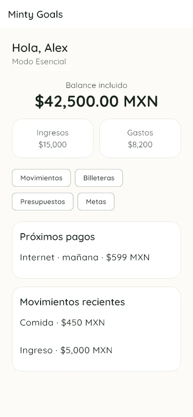
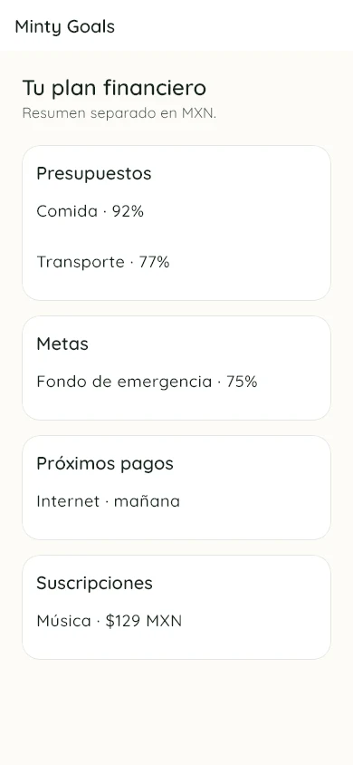
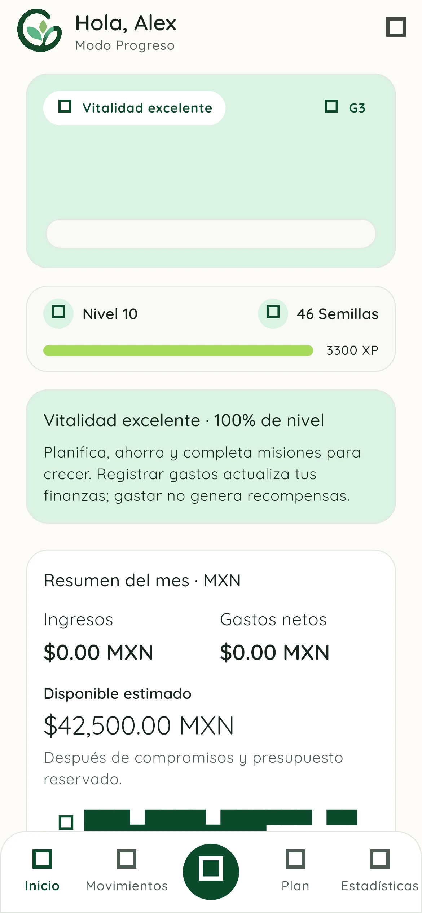
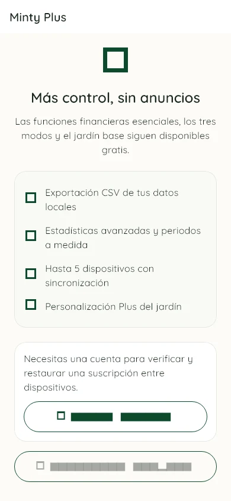

Finanzas personales, a tu ritmo
Cuida tu dinero.
Haz crecer tus metas.
Registra tus movimientos, organiza presupuestos y metas, y convierte tus avances financieros en un jardín que crece contigo.
Funciona sin cuenta y sin conexión para sus funciones básicas.

Organización financiera
Todo lo importante, en un solo lugar
Una vista clara de tu dinero, sin conectarse directamente con bancos ni pedir credenciales financieras.

01
Entiende qué entra, qué sale y qué sigue
Registra ingresos, gastos, transferencias, ajustes y reembolsos. Organiza billeteras y categorías, y consulta tus movimientos sin depender de una conexión.
- Presupuestos por categoría
- Metas de ahorro y aportaciones
- Pagos y movimientos recurrentes
- Estadísticas separadas por moneda

02
Progreso que se siente
Tus hábitos hacen crecer el jardín
Completa misiones ligadas a acciones financieras reales, gana experiencia y semillas, y observa la vitalidad de tu planta. El jardín acompaña tu constancia sin reemplazar tus decisiones.
Opcional
Más control con Minty Plus
Las funciones financieras esenciales, los tres modos y el jardín base siguen disponibles gratis. Minty Plus amplía la experiencia sin alterar tus datos locales.
- Exportación CSV de tus datos locales
- Estadísticas avanzadas y periodos a medida
- Hasta 5 dispositivos con sincronización
- Personalización Plus del jardín
Los precios y la disponibilidad dependen de Google Play o App Store y todavía no están publicados.

Privacidad clara
Tus finanzas empiezan en tu dispositivo
Minty Goals funciona principalmente de forma local. Crear una cuenta y sincronizar es opcional. La analítica solo puede activarse con tu autorización y no está diseñada para enviar montos, saldos, notas ni contenido financiero detallado.
Respuestas directas
Preguntas frecuentes
¿Qué es Minty Goals?
Es una aplicación de finanzas personales desarrollada por ByteShark. Permite registrar movimientos y organizar billeteras, presupuestos, metas, pagos recurrentes, estadísticas y progreso de un jardín.
¿Es gratis?
Las funciones financieras esenciales, los tres modos de experiencia y el jardín base están disponibles gratis. Minty Plus es una suscripción opcional con funciones adicionales; sus precios todavía no están publicados.
¿Necesito una cuenta?
No. Puedes usar las funciones básicas sin registrarte. La cuenta es opcional y se utiliza para respaldo, sincronización y la verificación o restauración de Minty Plus entre dispositivos.
¿Dónde se guardan mis datos?
La información se guarda primero en la base de datos local de tu dispositivo. Si creas una cuenta y activas la sincronización, los datos que decidas respaldar pueden procesarse en la infraestructura Supabase administrada por ByteShark.
¿Se conecta con mi banco?
No. Minty Goals no se conecta directamente con bancos y no solicita números de tarjeta, cuentas bancarias, claves, NIP, CVV ni credenciales de instituciones financieras.
¿Cómo contacto a soporte?
Escribe a byteshark098@gmail.com o envía un mensaje por WhatsApp.
Próximamente
Tu próxima meta puede empezar aquí
Minty Goals se prepara para Android y iOS. Los enlaces públicos de descarga todavía no están disponibles.